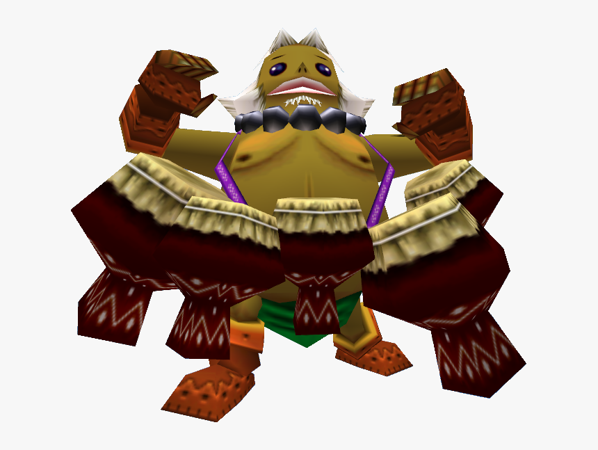

This is a link. Deku Link is a character from the video game "The Legend of Zelda: Majora's Mask." He is the transformation of the main protagonist, Link, into a small, plant-like creature. As Deku Link, the player gains access to new abilities such as shooting bubbles and flying with the help of flower petals. Deku Link is also able to enter areas that are inaccessible to Link, adding a new layer of exploration and puzzle-solving to the game.
Goron Link

This is a link. Goron Link is another transformation of the main protagonist, Link, in "The Legend of Zelda: Majora's Mask." In this form, Link turns into a Goron, a humanoid creature with rock-like features. As Goron Link, the player gains the ability to roll at high speeds, smash through obstacles, and curl into a ball to deflect enemy attacks. Goron Link is also able to enter areas that are inaccessible to other forms, adding a new layer of exploration and puzzle-solving to the game.